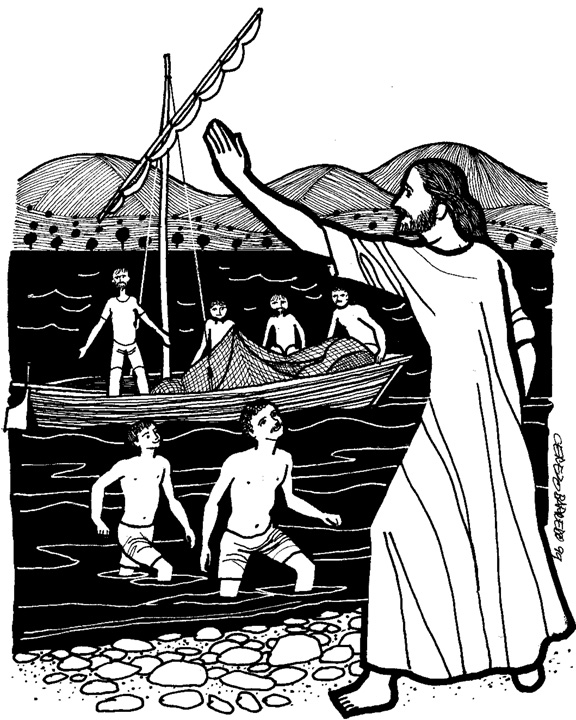
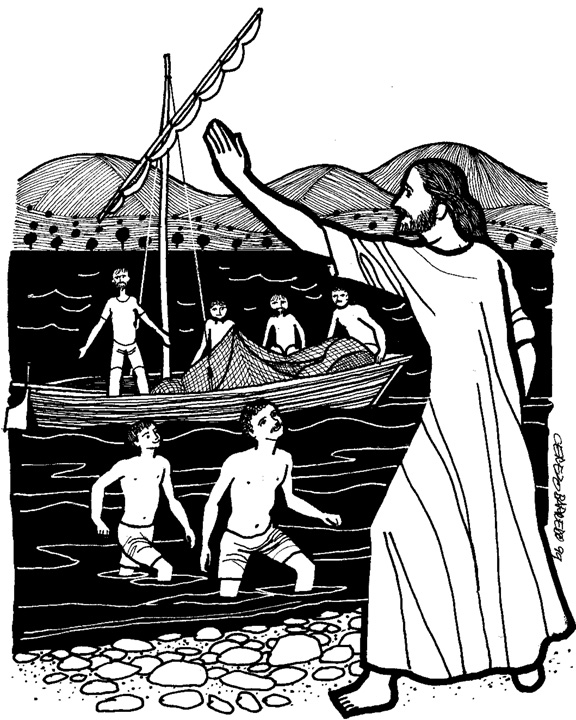

This week's lessons: Jonah 3:1-5, 10 Psalm 62:5-12 1 Corinthians 7:29-31 Mark 1:14-20

This
week's lessons: Jonah
3:1-5, 10 Psalm
62:5-12 1
Corinthians 7:29-31 Mark
1:14-20

Next week:
Deuteronomy
18:15-20, Psalm
111, 1
Corinthians 8:1-13,
Mark
1:21-28